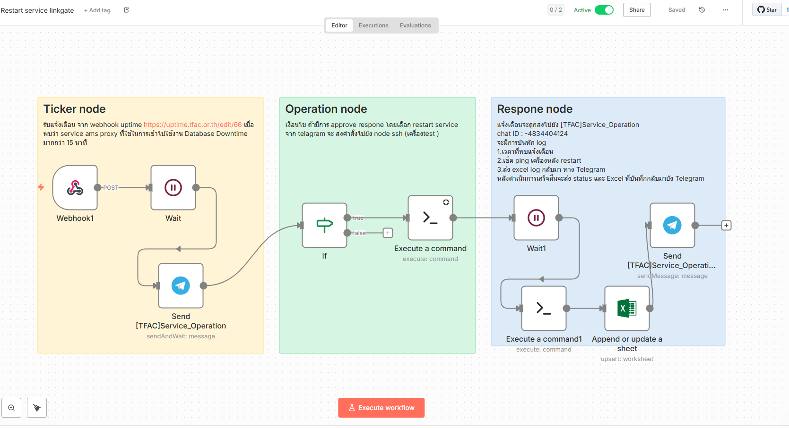
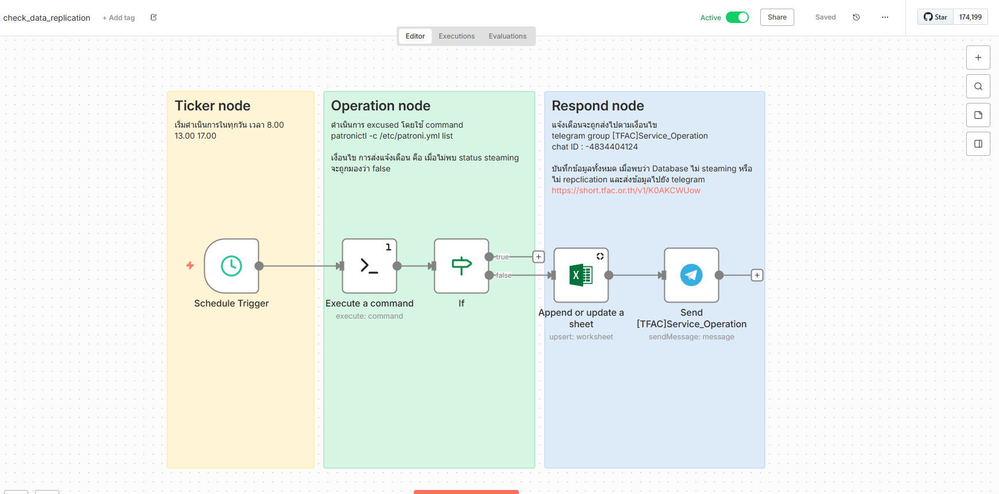
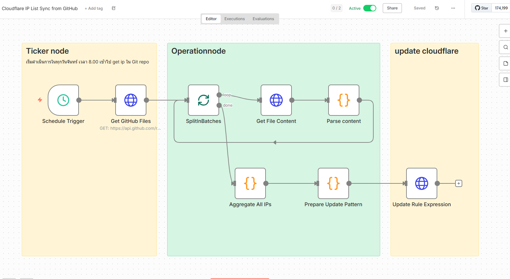
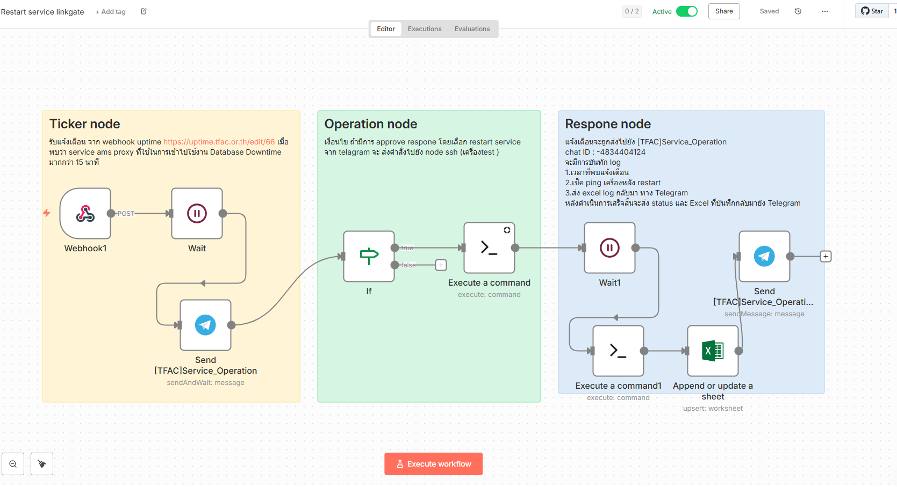
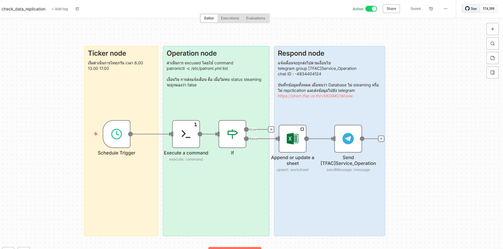
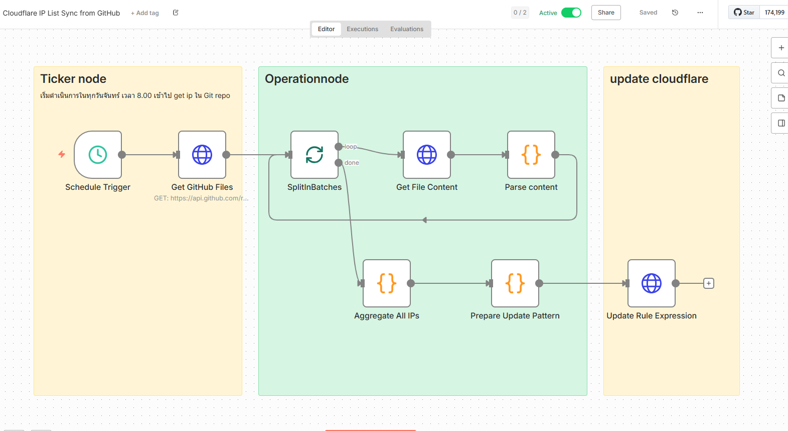

Infrastructure Automation & Monitoring Platform
Deployed self-hosted n8n to automate operations, reduce manual workload, and enable real-time visibility.
 





The Challenge
Production infrastructure required repetitive manual tasks such as handling monitoring alerts, log review, report generation, and cross-system coordination.
Operational processes were time-consuming and prone to delay.
The Solution
Deployed and maintained a self-hosted n8n instance (Docker-based) to automate infrastructure operations and integrate multiple systems.
Alert Handling Automation
Monitoring alerts → Automated notification routing → Structured response workflow for operations team
Infrastructure Reporting Automation
Scheduled data queries → Generate infrastructure status reports → Automatic email distribution
Data Integration & Dashboarding
Aggregated multiple infrastructure data sources into a centralized web-based monitoring dashboard
API-Based System Integration
Connected REST APIs and webhooks to synchronize operational data between services